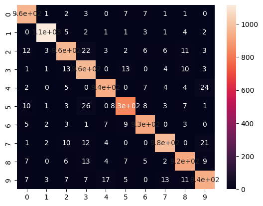

from keras.datasets import mnist
(X_train, y_train), (X_test, y_test)= digits = mnist.load_data()#Neural Network for predicting handwritten digits
Generating data
print(X_train.shape)
print(X_test.shape)(60000, 28, 28)
(10000, 28, 28)Changing 3D arrays to 2D arrays
import numpy as np
X_train = np.array([X_train[i].ravel() for i in range(X_train.shape[0])])X_train.shape(60000, 784)X_test = np.array([X_test[i].ravel() for i in range(X_test.shape[0])])
X_test.shape(10000, 784)Defining the model
import tensorflow as tf
from tensorflow.keras.layers import Dense
from tensorflow.keras.models import Sequentialmodel = Sequential([
Dense(units=25,activation='relu'),
Dense(units=15,activation='relu'),
Dense(units=10,activation='linear')
])model.compile(loss=tf.keras.losses.SparseCategoricalCrossentropy(from_logits=True),
optimizer = tf.optimizers.Adam(0.00001),)Fitting data into our model
model.fit(X_train,y_train,epochs=50)Epoch 1/50
1875/1875 [==============================] - 6s 3ms/step - loss: 0.0796
Epoch 2/50
1875/1875 [==============================] - 4s 2ms/step - loss: 0.0722
Epoch 3/50
1875/1875 [==============================] - 4s 2ms/step - loss: 0.0697
Epoch 4/50
1875/1875 [==============================] - 5s 3ms/step - loss: 0.0682
Epoch 5/50
1875/1875 [==============================] - 4s 2ms/step - loss: 0.0671
Epoch 6/50
1875/1875 [==============================] - 5s 2ms/step - loss: 0.0662
Epoch 7/50
1875/1875 [==============================] - 5s 2ms/step - loss: 0.0654
Epoch 8/50
1875/1875 [==============================] - 4s 2ms/step - loss: 0.0648
Epoch 9/50
1875/1875 [==============================] - 5s 2ms/step - loss: 0.0642
Epoch 10/50
1875/1875 [==============================] - 5s 3ms/step - loss: 0.0637
Epoch 11/50
1875/1875 [==============================] - 4s 2ms/step - loss: 0.0632
Epoch 12/50
1875/1875 [==============================] - 5s 3ms/step - loss: 0.0628
Epoch 13/50
1875/1875 [==============================] - 4s 2ms/step - loss: 0.0625
Epoch 14/50
1875/1875 [==============================] - 4s 2ms/step - loss: 0.0621
Epoch 15/50
1875/1875 [==============================] - 5s 3ms/step - loss: 0.0618
Epoch 16/50
1875/1875 [==============================] - 4s 2ms/step - loss: 0.0615
Epoch 17/50
1875/1875 [==============================] - 4s 2ms/step - loss: 0.0613
Epoch 18/50
1875/1875 [==============================] - 5s 3ms/step - loss: 0.0610
Epoch 19/50
1875/1875 [==============================] - 4s 2ms/step - loss: 0.0607
Epoch 20/50
1875/1875 [==============================] - 4s 2ms/step - loss: 0.0605
Epoch 21/50
1875/1875 [==============================] - 8s 4ms/step - loss: 0.0603
Epoch 22/50
1875/1875 [==============================] - 7s 3ms/step - loss: 0.0601
Epoch 23/50
1875/1875 [==============================] - 5s 3ms/step - loss: 0.0598
Epoch 24/50
1875/1875 [==============================] - 4s 2ms/step - loss: 0.0597
Epoch 25/50
1875/1875 [==============================] - 4s 2ms/step - loss: 0.0595
Epoch 26/50
1875/1875 [==============================] - 6s 3ms/step - loss: 0.0592
Epoch 27/50
1875/1875 [==============================] - 4s 2ms/step - loss: 0.0591
Epoch 28/50
1875/1875 [==============================] - 5s 2ms/step - loss: 0.0589
Epoch 29/50
1875/1875 [==============================] - 4s 2ms/step - loss: 0.0588
Epoch 30/50
1875/1875 [==============================] - 4s 2ms/step - loss: 0.0586
Epoch 31/50
1875/1875 [==============================] - 5s 3ms/step - loss: 0.0584
Epoch 32/50
1875/1875 [==============================] - 4s 2ms/step - loss: 0.0582
Epoch 33/50
1875/1875 [==============================] - 4s 2ms/step - loss: 0.0581
Epoch 34/50
1875/1875 [==============================] - 5s 3ms/step - loss: 0.0580
Epoch 35/50
1875/1875 [==============================] - 4s 2ms/step - loss: 0.0578
Epoch 36/50
1875/1875 [==============================] - 4s 2ms/step - loss: 0.0577
Epoch 37/50
1875/1875 [==============================] - 5s 3ms/step - loss: 0.0576
Epoch 38/50
1875/1875 [==============================] - 4s 2ms/step - loss: 0.0574
Epoch 39/50
1875/1875 [==============================] - 4s 2ms/step - loss: 0.0572
Epoch 40/50
1875/1875 [==============================] - 5s 3ms/step - loss: 0.0571
Epoch 41/50
1875/1875 [==============================] - 4s 2ms/step - loss: 0.0570
Epoch 42/50
1875/1875 [==============================] - 4s 2ms/step - loss: 0.0569
Epoch 43/50
1875/1875 [==============================] - 5s 3ms/step - loss: 0.0567
Epoch 44/50
1875/1875 [==============================] - 4s 2ms/step - loss: 0.0565
Epoch 45/50
1875/1875 [==============================] - 4s 2ms/step - loss: 0.0564
Epoch 46/50
1875/1875 [==============================] - 5s 3ms/step - loss: 0.0563
Epoch 47/50
1875/1875 [==============================] - 4s 2ms/step - loss: 0.0562
Epoch 48/50
1875/1875 [==============================] - 4s 2ms/step - loss: 0.0561
Epoch 49/50
1875/1875 [==============================] - 5s 3ms/step - loss: 0.0560
Epoch 50/50
1875/1875 [==============================] - 4s 2ms/step - loss: 0.0558<keras.callbacks.History at 0x7da45a7ac430>Model’s predictions
z = model.predict(X_test)
z313/313 [==============================] - 1s 1ms/steparray([[ 72.16857 , 141.73775 , 96.48515 , ..., 154.52151 ,
121.25679 , 132.14868 ],
[ -0.627826 , -3.3008962, 5.777237 , ..., -2.4945285,
0.6228762, 0.7712919],
[-230.27592 , 258.76544 , 64.82611 , ..., -130.3381 ,
-27.08746 , -234.17287 ],
...,
[ 34.202644 , 43.17494 , 33.014576 , ..., 53.978813 ,
40.810585 , 55.017437 ],
[ 138.34541 , 144.58145 , 81.53359 , ..., 156.82513 ,
158.51685 , 143.86653 ],
[ 116.74089 , 120.48703 , 86.29796 , ..., 48.32769 ,
111.52056 , 98.84621 ]], dtype=float32)Converting predicted values to digits
pred = np.array([np.argmax(z[i]) for i in range(len(z))])
predarray([7, 2, 1, ..., 4, 5, 6])print(pred.shape)
print(y_test.shape)(10000,)
(10000,)Accuracy of our Neural Network
from sklearn.metrics import accuracy_score
accuracy_score(y_test,pred)*10095.38from sklearn.metrics import confusion_matrix
import seaborn as sns
cf = confusion_matrix(y_test,pred)
sns.heatmap(cf,annot=True)<Axes: >